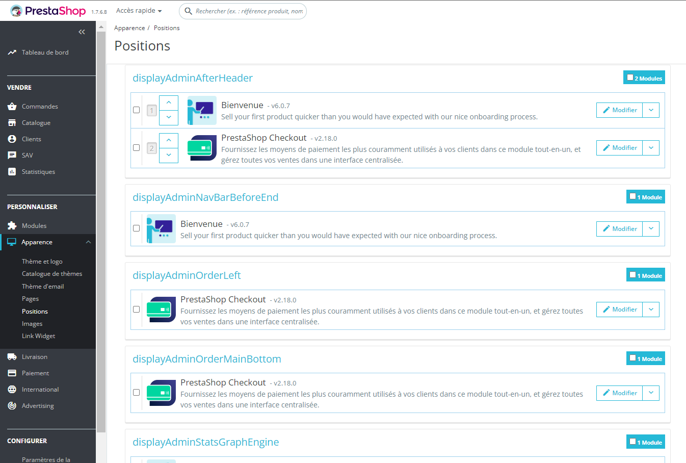
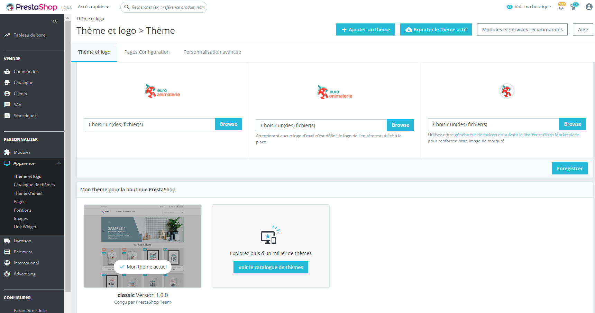
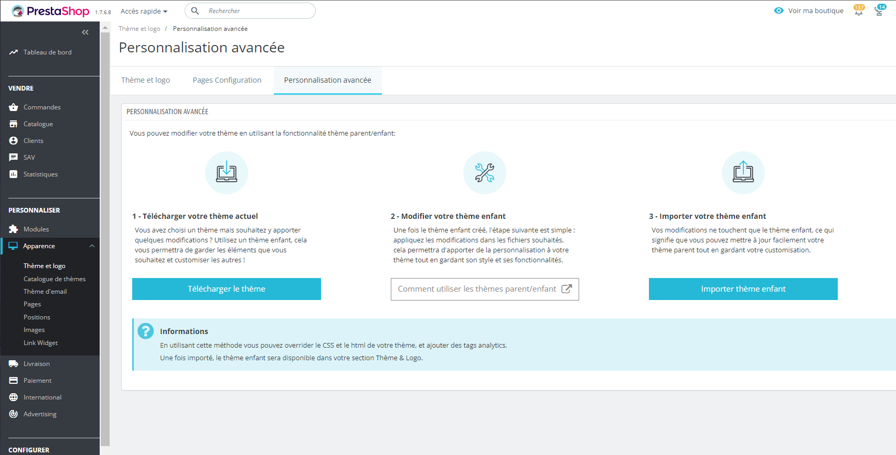
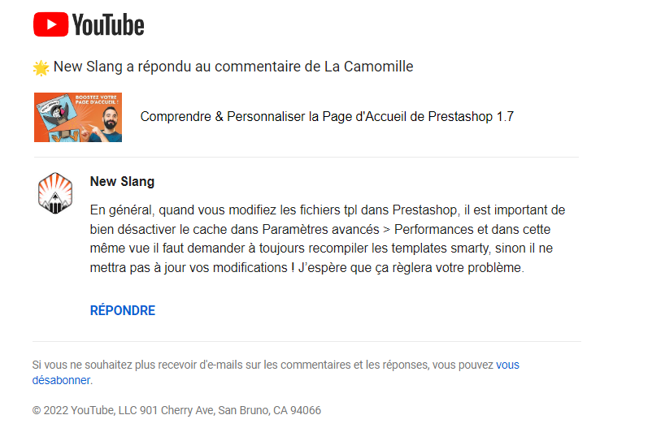
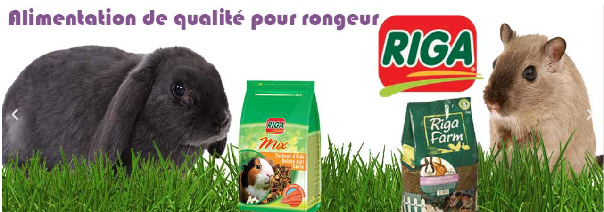
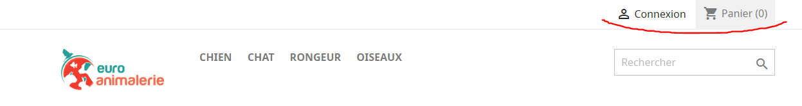
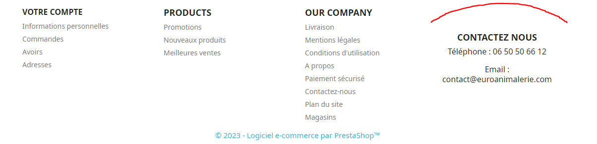

Stage 2022
Résumé
J'ai eu l'occasion dans le cadre de ma première année du BTS SIO de faire un stage pour la société Louiseenco. Afin de pouvoir vendre des produits, ils ont besoin de créer un site de vente en ligne appelé "EuroAnimalerie". Il m'a été confié de travailler sur la modification du site hébergé sur Prestashop pour qu'il corresponde aux attentes de la société.
Découverte et apprentissage de Prestashop
Pour pouvoir travailler sur les modifications de Prestashop, j'ai dû me former en autonomie pour comprendre son fonctionnement et ainsi être en capacité d'apporter des modifications.
J'ai découvert que Prestashop est spécialisé dans la conception et la gestion de site de commerce. On peut facilement gérer les stocks mis en vente sur le site grâce à une base de donnée généré automatiquement, on peut gérer les livraisons et les réductions sur les produits
Les missions qui m'ont été confiées
- - Modifier le thème utilisé pour le site pour que cela correspondent aux attentes de l'entreprise.
- - Ajouts et modifications des modules sur les différentes pages.
- - Ajout de la bannière sur les pages du site
Fonctionnement par modules
Les éléments sur Prestashop fonctionne avec un système de "modules" qui apparaissent selon l’ordre dans lesquels ils ont été placé. Pour accéder aux positionnements de ces derniers il faut aller dans la section PERSONNALISER dans l’onglet Positions. C’est ici que l’on peut choisir l’emplacement des différents modules et dans quels parties du site web elles se situent (corp de page, header, footer,…). Il faut ainsi trouver à quel groupement fait référence chaque positions et y placer les modules que l’on désir ajouter ou supprimer de celle-ci. On peut ainsi modifier l’emplacement des modules mais le plus intéressant et de modifier les modules eux même pour qu’ils affichent ce que l’on veut via les paramètres. Il faut ainsi aller dans la section MODULE dans l’onglet gestionnaire de modules. C’est ici que l’on peut les personnaliser.
C'est grâce aux modules que j'ai notamment pu ajouter dans l'entête du site les bouttons "connexions" et "panier" dans l'entête
Les modules:
Modification du thème
Afin de définir la forme générale du site et son contenu, Prestashop applique un thème lors de la création du site. Par défaut il applique le thème "classic" mais d'autres thèmes payant allant de 60 à 200 euros peuvent être acheté pour être appliqué pour se faciliter la tâche de la personnalisations et avoir instantanément une apparence s'approchant du styles de boutiques. Pour ne pas avoir à dépenser de l'argent dans un thème on peut également personnaliser le thème de base en créant une version parallèle modifiable du thème appelé "thème-enfant". C'est par le billet d'un thème enfant que j'ai pu apporter des modifications au site comme la taille du logo et l'emplacement d'autres éléments dans un fichier css additionnel.
Menu des thèmes Prestashop:
Menu permettant de créer un thème enfant:
Par ailleurs, cette partie et celle qui m'a demandé le plus de patience et de recherche car l'implémentation et la modification du thème enfant générait beaucoup d'erreur et de problème que j'ai dû régler en me renseignant sur internet. J'ai même eu la réponse d'un vidéastre en commentaire qui m'a permis de corriger les problèmes d'actualisations du thème que je rencontrais.
Là réponse:
Autres illustrations du stage
La bannière du site:
Haut de page dans lequel j'ai ajouté les deux modules:
Pied de page dans lequel j'ai édité le thème pour ajouter les informations:
